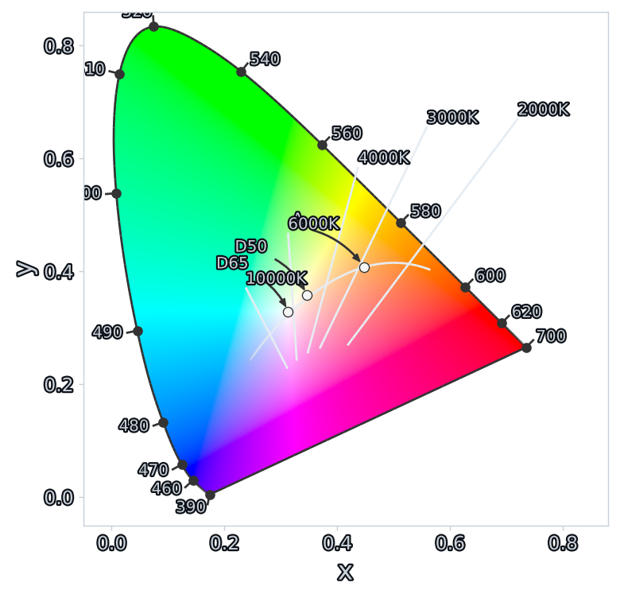
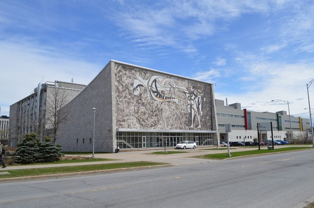
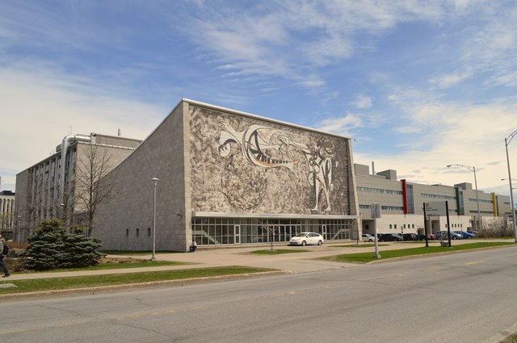
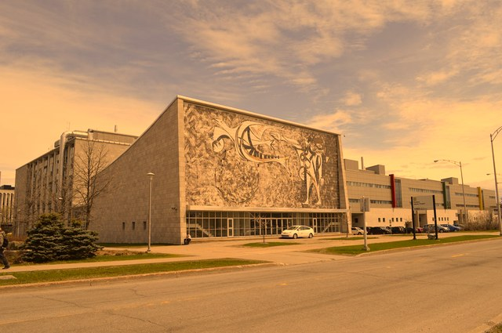

Why R 235 G 123 B 85 means nothing on its own.
Perception primer after Michael Brown, "Understanding Color & the In-Camera Image Processing Pipeline," ICCV 2023.
How your eyes turn a spectrum of light into three numbers.
What reaches the eye is the illuminant's spectrum shaped by the surface: a wavelength-by-wavelength product. Each receptor then integrates that spectrum against its sensitivity:
E illuminant SPD · R surface reflectance · Sk sensitivity. A continuous spectrum becomes three numbers — a massive, lossy projection.
Light is physics — a wave with a wavelength λ, out in the world. Colour is perception — what your brain builds from that light. They live in two different spaces.
A human eye senses light through three cone types — L, M, S (long / medium / short wavelength).
And the response is compressed: perception roughly tracks the logarithm of physical intensity (Weber–Fechner), not a linear scale. A doubling of photons does not feel like a doubling of brightness — which is exactly why we encode images with a gamma curve.
The measured cone sensitivities Sk(λ), k ∈ {L, M, S} (Stockman & Sharpe 2°) — the same Sk that drive the observation integral on the previous slide.
A white page looks white under noon daylight and under warm tungsten — even though the spectra hitting your retina are wildly different. This is chromatic adaptation (color constancy).
Same idea, two names: white balance in a camera, and the white point + Bradford adaptation that maps sRGB’s D65 to the ICC profile’s D50 in our engineering section.
Primaries, white points, and the gamut that give a triple its color.
Three integers carry no color by themselves. To turn them into a real spectrum of light you silently assume primaries, a white point, an encoding curve, a connection space… Your screen is showing you an answer right now — only because it guessed sRGB. Let's unpack every assumption.
RGB triples are just a recipe — “how much of each ingredient.” But a recipe is useless until you say what the ingredients are.
Until you pin down which red, which green, which blue, the same numbers can produce wildly different colors on different devices.
Same recipe, two “reds”:
(1,0,0) in two color spaces → two different physical colors.
We can't read cones per pixel, so in 1931 the CIE fixed XYZ: a linear transform of the LMS responses, designed so that
The curves x̄, ȳ, z̄ are the colour-matching functions — the standard observer's Sk(λ).

Drop luminance — x = X/(X+Y+Z), y = Y/(X+Y+Z) — and the 3-D solid flattens to the horseshoe: every physically realizable chromaticity, its curved edge the pure spectral colours. The Planckian locus threads through it (the whites of glowing blackbodies — D65, D50…). These are physical colours; now we must decide where an image's max R, max G, max B land on this map — its primaries.
A gamut is the triangle spanned by the three primaries — every colour the space can encode lives inside it. Push a corner outward (sRGB → Adobe green) and the triangle covers more of the spectrum.
The horseshoe is the spectral locus — every monochromatic wavelength, 380–700 nm — so it bounds all physical colours.
Fill is an sRGB-clamped rendering — true wide-gamut colors can't be shown on this display, which is exactly the point.
You saw the achromatic centre of the horseshoe. Now: what happens when R = G = B = max? That's the white point (D65, D50, …).
An illuminant is the spectrum of a light source, summarized by a chromaticity — a point on the Planckian locus you just saw. It pins down what the image calls "white" — the physical color produced when R = G = B.
In a file the white point is not stored per pixel — it rides along in the color-space tag / ICC wtpt. Untagged ⇒ sRGB ⇒ D65. It only does something when you change spaces: if source and destination whites differ (say D65→D50), you must chromatically adapt so neutrals stay neutral — that's a CAT (coming up).
Why we bend the numbers to store them — and must straighten them before any math.
Light is linear: twice the photons = twice the value. But we don't store light linearly, because your eyes care far more about differences in the darks than in the brights. So we bend the numbers with a curve.
Opto→Electronic, in the camera. Scene light → code values. Squishes a huge brightness range into 8 bits, spending more codes on darks. (encoding)
Electronic→Optical, in the display. Code values → light the screen emits. The sRGB ~2.2 curve, or PQ / HLG for HDR. (decoding)
Scene→screen, end to end (EOTF∘OETF). On purpose not 1:1 — a ~1.2 system gamma adds contrast so images look right in a dim room. (rendering)
Engineering bite: 8-bit files are OETF-encoded. Before any math — matrices, blending, resizing, filtering — linearize with the EOTF first. Skip it and gradients band, edges darken, resizing halos. Here's what those squandered bits look like:
Same gradient, same bit budget. Perceptual encoding spends codes in the shadows, where your eye resolves fine steps; linear squanders them on highlights it can't tell apart. Drag the decode γ off its match → midtones shift and shadows band. Then look at the bottom strip: linear at the same bit depth.
Blend, resize, blur, composite — all pixel math must happen in linear light. Do it in gamma-encoded sRGB and the result is dark and wrong.
Every row: source pattern → average in γ-space vs linear. The γ result is what you get if your editor skips linearization.
One 3×3 matrix turns a recipe into a real color — and back.
Now that we've met primaries, white points and encodings, the whole zoo is just those three knobs set differently:
| Space | White | Gamut | Encoding | Where you meet it |
|---|---|---|---|---|
| sRGB / Rec.709 | D65 | baseline (100%) | ~2.2 piecewise | the web, most monitors, untagged files |
| Display P3 | D65 | ~25% wider red/green | sRGB curve | Apple screens, phone cameras |
| Adobe RGB (1998) | D65 | wider greens / cyans | γ 2.199 | photography, prepress |
| Rec.2020 | D65 | huge (near-spectral) | PQ / HLG (HDR) | UHD TV, HDR video |
| ProPhoto RGB | D50 | enormous (imaginary primaries) | γ 1.8 | raw editing headroom |
Wider primaries cover more colors — but each code value now spans a bigger color step, so 8 bits buy less precision (banding risk). That's why wide-gamut workflows lean on 16-bit.
We have the primaries (their (x, y)) and the white point. Now build the map from an image's linear RGB into the shared XYZ hub. Each primary’s (x, y) plus its implied z = 1 − x − y gives a direction in XYZ; assemble them and solve for the scaling factors that make white come out right:
The scaling factors (S_r, S_g, S_b) are chosen so that R=G=B=1 maps exactly to the white point. Fold them in → one fixed 3×3 matrix per color space.
For sRGB (adapted to D50 for the profile connection space), it’s approximately:
The middle row is the luminance equation. Note the coefficients: green ≈ 0.72 dominates — which is precisely why green looks brightest to the eye.
Target D65 instead (native sRGB, no print adaptation) and the same primaries give the canonical matrix — e.g. Y = 0.2126 R + 0.7152 G + 0.0722 B. The two versions differ only because the D50 one has a Bradford adaptation folded in — a chromatic adaptation transform, which we unpack a few slides on.
The ring is your pixel’s chromaticity (x, y), inside the source gamut.
Re-expressing a color under a different white so neutrals stay neutral.
To re-express a color under a different white (D65→D50) so neutrals stay neutral, you scale it in a cone-like space — von Kries' idea: one gain per channel, set by the ratio of the two whites.
From a JPEG pixel — you can't adapt 8-bit RGB directly:
The methods differ only in the matrix M:
The same sRGB photo, Bradford-adapted from its D65 white to two others. The neutrals — grey stone, road, sky — drift toward each illuminant's cast: a gentle warm-up for D50, a dramatic tungsten orange for A. The further the destination white sits from D65, the bigger the shift.



Bradford CAT, D65 → destination white — the exact transform from the previous slide, applied per pixel.
The matrix, tone curves, and white point — color meaning written to disk.
A matrix-based ICC profile is just these pieces written to disk:
rXYZ gXYZ bXYZ — the XYZ of each primary at full intensity (the matrix columns).rTRC / gTRC / bTRC — the per-channel tone curves (gamma).profile.icc
wtpt → D50 rXYZ → 0.436 0.222 0.014 gXYZ → 0.385 0.717 0.097 bXYZ → 0.143 0.061 0.714 rTRC → γ curve gTRC → γ curve bTRC → γ curve
A profile is a small binary that says “here's how my device's numbers map to absolute color.” Two flavors:
Everyone meets in the PCS (Profile Connection Space): CIE XYZ or Lab, always at D50. Rendering intents — perceptual, relative / absolute colorimetric, saturation — decide how out-of-gamut colors get squeezed in.
required tags · matrix/TRC
'desc' profile name 'wtpt' media white → D50 'rXYZ' 'gXYZ' 'bXYZ' primaries (D50) 'rTRC' 'gTRC' 'bTRC' tone curves 'cprt' copyright header: class=mntr space=RGB pcs=XYZ
A matrix/TRC profile is just numbers: compute the primaries→XYZ matrix, Bradford-adapt to D50, write the tags — no CMS library needed. Then hand the bytes to Pillow.
M = rgb_to_xyz_matrix(primaries, white) M = adapt_to_d50(M, white) # Bradford tags = [wtpt(D50), rXYZ(M[:,0]), gXYZ(M[:,1]), bXYZ(M[:,2]), rTRC(γ), gTRC(γ), bTRC(γ)] icc = header + tag_table + tags # a valid .icc img.save("out.png", icc_profile=icc)
same triple, two profiles → Pillow / LittleCMS
read (235,123,85) as… sRGB-like → sRGB (236, 124, 84) Adobe-like → sRGB (255, 124, 82) ↑ red clips — out of sRGB gamut
Identical bytes on disk, different real colors — the profile is the meaning. python icc.py
icc.pyBuild a matrix/TRC ICC profile from scratch — no CMS library — then tag the same RGB bytes two ways and watch the color change.
Open icc.py →The two triangles — source gamut and destination gamut — generally differ. Step 3 is where out-of-gamut colors get handled by the rendering intent.
Who does this? Software, not the panel. The OS/app color-management module on the CPU/GPU — ColorSync (macOS), Windows ICM, or the browser/Qt/Skia — converts source→display profile before sending pixels out. The display just emits per its fixed EOTF (plus an optional hardware-calibration LUT in the monitor or GPU). Skip color management and the matrix is simply never applied — the file's raw numbers hit an assumed-sRGB screen.
“62% red-primary, 30% green-primary, 8% blue-primary.”
One pixel’s recipe
The same triple yields a different physical color when the primaries change. That’s why an untagged Adobe RGB photo shown as sRGB looks wrong: the viewer mixes the right recipe with the wrong ingredients.
Intended (Adobe RGB)
Misread as sRGB
Appearance models and the full solid of every color that can exist.
XYZ and Lab tell you which color; they don't tell you how it appears — that depends on the viewing conditions. A colour appearance model predicts the perception.
stimulus XYZ + viewing conditions: adapting white XYZw, adapting luminance LA, background Yb, surround (avg / dim / dark)
CAT16 adaptation → cone-response compression → opponent (red-green / yellow-blue) signals
J lightness · Q brightness · C chroma · M colourfulness · s saturation · h hue
Why care: predicts the same appearance across different lights/media (cross-media matching, gamut mapping), and its uniform space CAM16-UCS gives a better perceptual ΔE than Lab. It's the modernized successor to CIECAM02.
The optimal-colour solid (MacAdam limits) under D65 — the boundary of every physically realizable object colour, built from ideal 0/1 reflectance spectra. Left, in linear sRGB: the sRGB gamut (yellow cube) is a small corner — many real surface colours can't even be encoded in sRGB. Right, in CIECAM02 (CAM02-UCS): the same solid reshaped into a perceptual appearance space — the shape gamut-mapping actually works in.
From raw sensor RGB to real, repeatable color — with a ColorChecker.
Raw camera output is not scene-linear — the ISP bakes in a tone curve. Colorimetry needs linear values. The ColorChecker’s 6 neutral patches have known relative luminance, so we fit the inverse response.
A real pipeline fits a richer curve or 1-D LUT, but γ captures the idea: straighten the response so values are proportional to scene radiance.
● raw response ● linearized — land them on the diagonal.
Goal: calibrate the sensor. A camera's raw RGB are its own arbitrary responses — not colorimetric, and not comparable across cameras or lights. Shoot a chart of known colors and fit the map sensor RGB → reference XYZ/sRGB. Payoff: accurate, repeatable color (product, medical, scientific), camera-to-camera consistency — it's exactly the matrix baked into every ISP / DNG ColorMatrix.
Even linearized, camera RGB ≠ XYZ — the sensor's sensitivities violate the Luther condition, so no exact linear map exists; we fit the best one over the 24 patches.
Polynomial / root-polynomial regression (Finlayson) add nonlinear terms; root-poly is additionally exposure-invariant. Real systems also use constrained LS (preserve neutral/exposure) and minimize ΔE in CIELAB, not RMS in linear.
Outer = reference, inner square = corrected. Lower ΔE = better match.
An untagged JPG/PNG hands you 235, 123, 85 and no ICC profile. Every tool then silently assumes sRGB — which unpacks to:
Change any one — open an Adobe RGB shot as sRGB, ignore the EOTF, assume D65 where it was D50 — and the same numbers become the wrong color. “Just RGB” is never just RGB.
Three numbers only become a color once you say what the ingredients are.